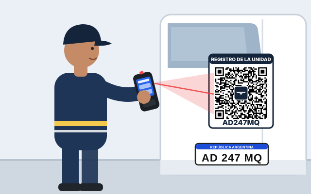
Cada unidad tiene su etiqueta QR. Escanearla abre su registro: desde ahí se cargan los movimientos de gomería y de stock.
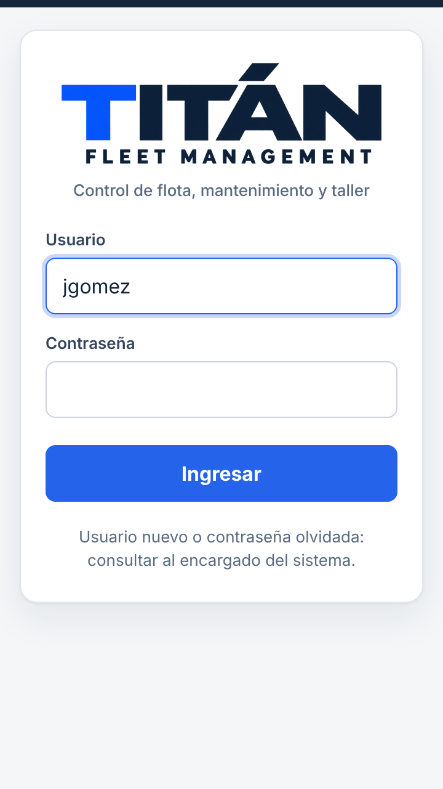
Abrir Titán Flota e ingresar usuario y contraseña. Queda guardado.
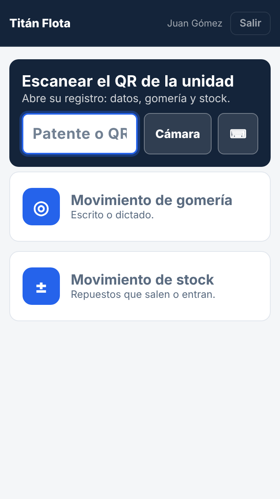
Inicio: escanear la unidad o elegir el movimiento.
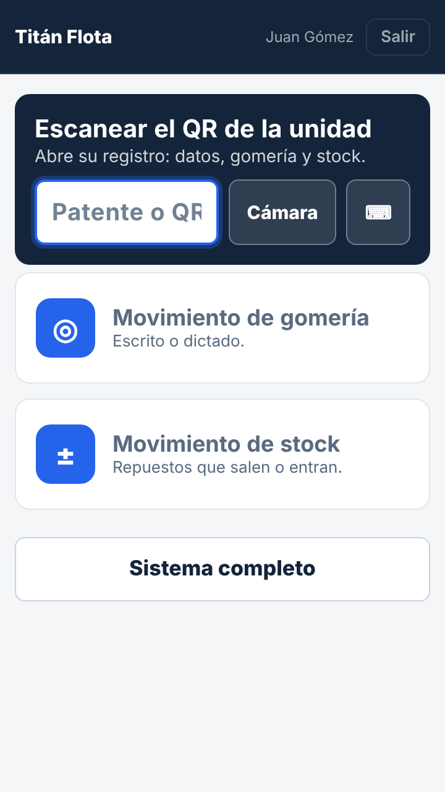
En el celular: entrar a la dirección del sistema y tocar «Agregar a pantalla de inicio».
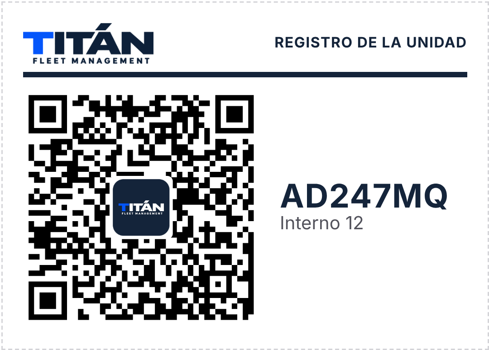
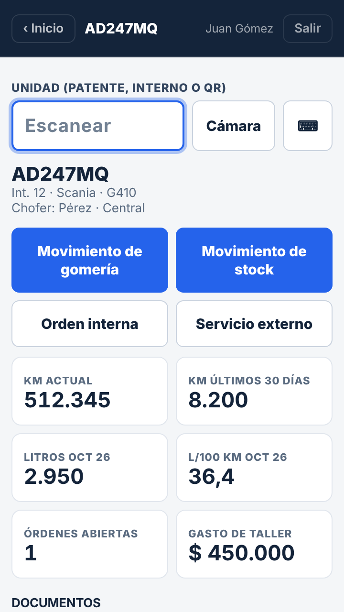
Registro: movimientos de gomería y de stock, orden interna y servicio externo.
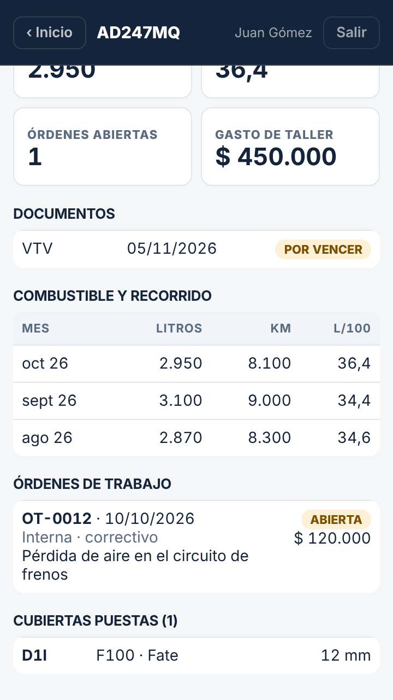
Datos: km, litros y consumo, documentos, órdenes y cubiertas.
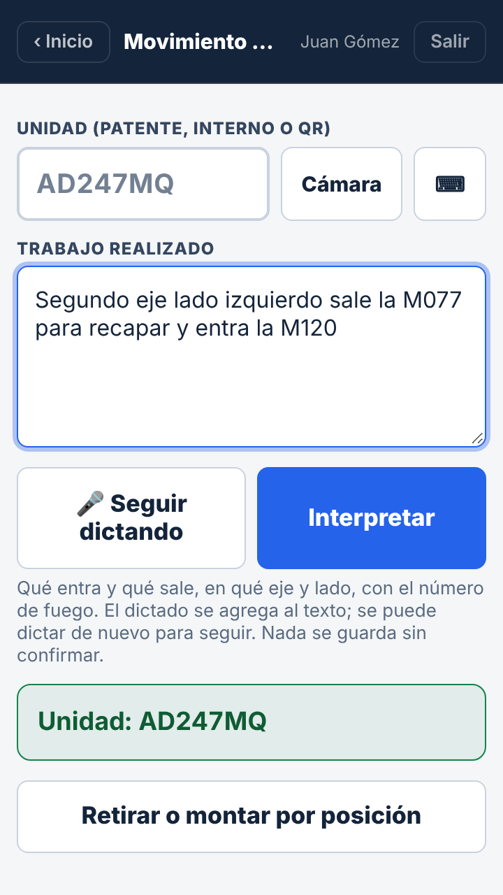
Escribir o tocar 🎤 Dictar: qué sale y qué entra, eje, lado y n.º de fuego.
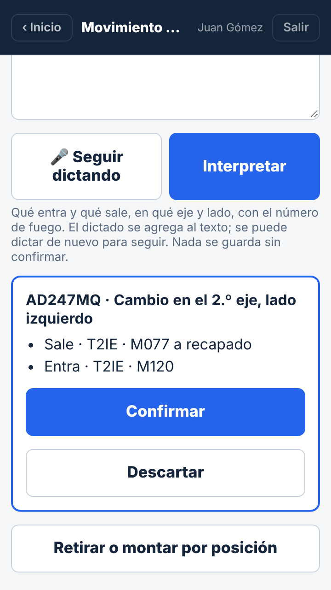
Interpretar: el sistema muestra lo que entendió. Revisar y Confirmar.
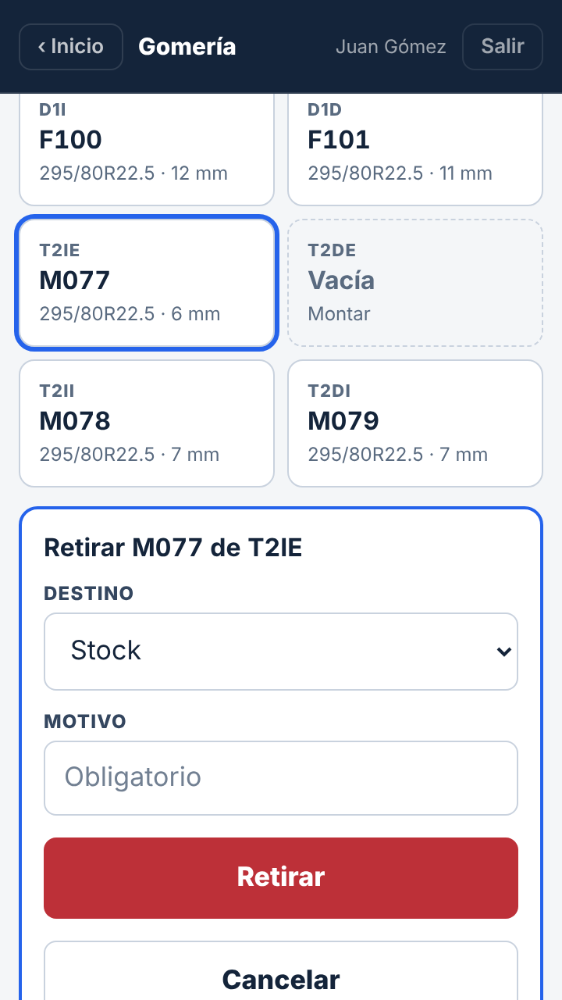
Por posición: tocar la rueda, elegir destino y motivo, y Retirar o Montar.
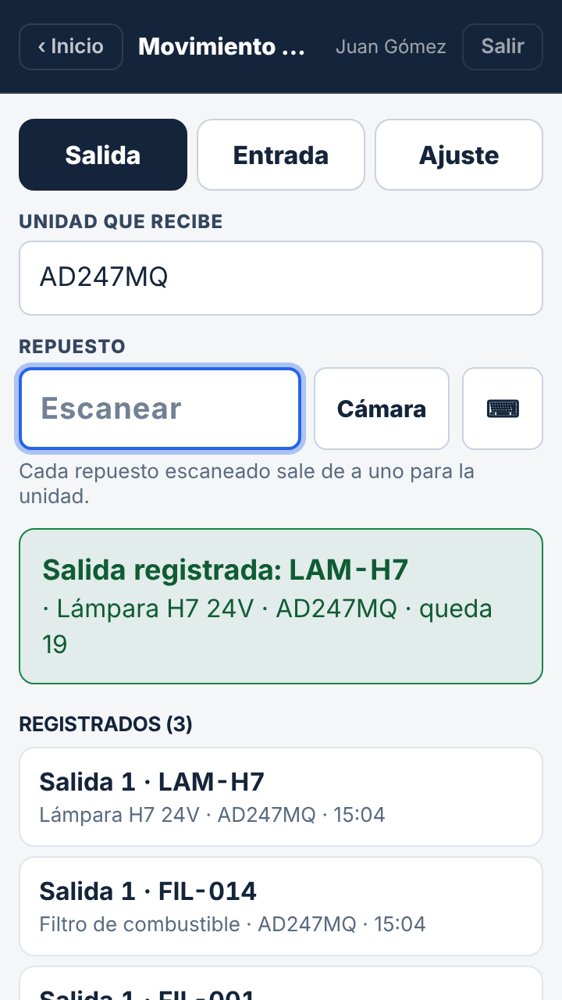
Salida: con la unidad elegida, escanear cada repuesto. Sale de a uno, al instante.
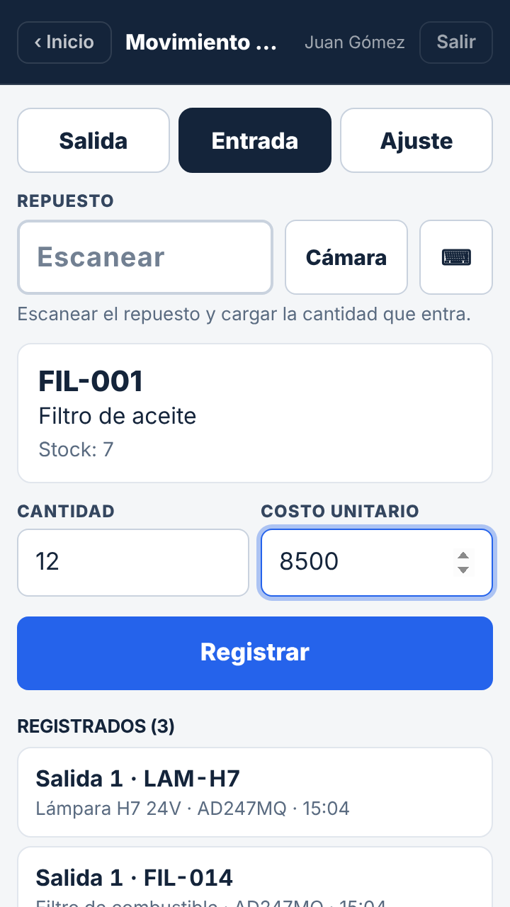
Entrada: escanear, poner cantidad y costo, y Registrar.
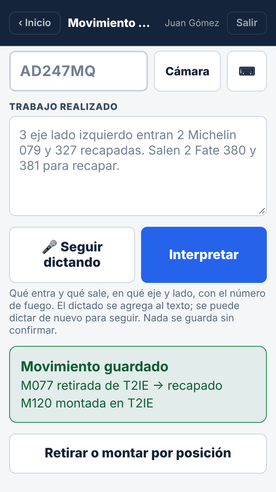
Confirmado: el movimiento queda en el historial de la unidad.